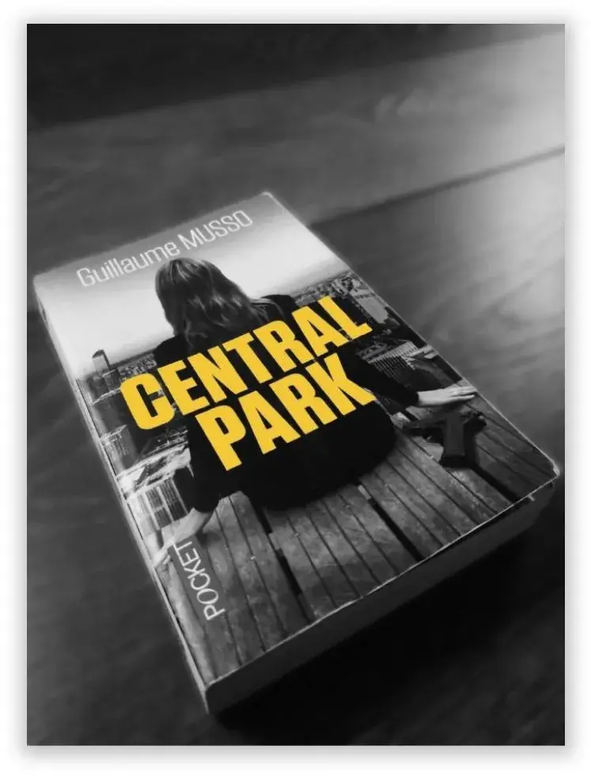

Le soir du 7 octobre 2013, Alice fait la fête sur les Champs-Élysées. Gabriel, lui, joue du piano pour son groupe de Jazz à Dublin. Pourtant, le lendemain, les deux inconnus se réveillent au beau milieu de Central Park. Menottés l'un à l'autre, aucun d'eux ne se souvient de comment ils sont arrivés ici. Mais en réalité, il s'avère que le pianiste n'est pas totalement franc…
RÉSUMÉ DU ROMAN
Un réveil étonnant
Menottés l’un à l’autre, Alice et Gabriel se retrouvent sous les arbres de Central Park, à New York. La jeune policière française et le pianiste de jazz américain n’ont aucun souvenir de leur rencontre. Alice contacte son collègue de Paris, Seymour, pour obtenir de l’aide. Le binôme se rend ensuite chez une connaissance qui leur retire les menottes.
Un flash-back revient sur la rencontre d’Alice et Paul Malaury, un gynécologue qui deviendra son mari.
Alice découvre sur elle un ticket avec un numéro provenant du Greenwich Hôtel. Le duo s’y rend et récupère une mallette laissée à l’aide de ce numéro. La flic découvre également sur elle un GPS miniaturisé. Ils décident donc de changer de vêtements à Chinatown. Gabriel remarque alors une cicatrice sur le ventre d’Alice et la questionne.
Changée à tout jamais
Deux ans plus tôt, Alice enquête sur Erik Vaughn, un tueur en série alors qu’elle est enceinte. Pensant l’avoir identifié, elle se rend à son domicile, seule. Le tueur la surprend et lui assène plusieurs coups de couteau dans le ventre. Son foetus est alors mort. En l’apprenant, son mari se précipite à l’hôpital mais meurt d’un accident de la route sur un pont. Le père d’Alice, ancien flic, affirme avoir tué Vaughn et caché son corps.
Je me souviens
Que ce même jour,
Le 21 novembre 2011,
Par orgueil, par vanité, par aveuglement,
J'ai tué mon bébé.
Et j'ai tué mon mari.
Tels sont les mots d'Alice après ces événements qui
bouleverseront sa vie à jamais.
Grâce à un code écrit sur le bras de Gabriel, Alice ouvre la mallette. Celle-ci contient une seringue sur laquelle Alice relève une empreinte avec une cicatrice caractéristique : une croix. D’après son collègue, Seymour, il s’agit de celle de Vaughn. En même temps, Gabriel avoue être un agent du FBI, enquêtant sur Vaugh
Une nouvelle piste ?
Du sang sur le chemisier d’Alice s’avère appartenir à un certain Caleb Dunn. Le couple décide de se rendre chez lui, à quelques heures de New York. Seymour se rend à l’endroit indiqué par le père d’Alice. Mais il affirme à Alice qu’il n’y a aucune trace du corps de Vaughn.
Une fois chez Dunn, ils apprennent qu’il se fait soigner au Segabo Cottage Hospital. Alice découvre également que l’homme au volant de son Audi la nuit dernière était Seymour. En se rendant au Segabo Cottage Hospital, Alice remarque la cicatrice en forme de croix sur le doigt de Gabriel. Elle est donc convaincue qu’il s’agit de Vaughn. En arrivant à l’hôpital Alice enfonce un couteau dans l’épaule de celui qu’elle croit être le meurtrier. Mais ce dernier répond en lui plantant une seringue dans le cou
Une annonce bouleversante
Nous retournons quelques jours auparavant, à Paris. Alice se rend chez un spécialiste qui lui apprend qu’elle est atteinte d’une forme précoce d’Alzheimer. Seymour, au courant pour sa maladie, cherche à l’aider rapidement. Il la convainc de se faire soigner au Segabo Cottage Hospital, centre de recherche de pointe.
Toute la vérité
Alice se réveille dans une chambre de la clinique. Tous ses souvenirs de la veille et des derniers jours lui reviennent. Elle rejoint Keyne en comprenant qu’il ne s’agit pas de Vaughn et découvre qu’il est psychiatre. Il a été envoyé pour la ramener au Cottage Hospital après sa fuite 5 jours après le début de son traitement. En réalité, chaque matin la mémoire d’Alice se réinitialisait. Elle ne savait pas qu’elle était malade et croyait qu’elle était à Paris la veille. Gabriel a alors monté ce scénario en rentrant dans la logique d’Alice, aidé par Seymour.
Gabriel avoue à Alice ses sentiments pour elle. Ils imaginent déjà la fin de leur vie ensemble.
En quelques mots …
C’est un dénouement vraiment inattendu que nous propose l’auteur dans ce livre. Entre suspense, rebondissement et émotions, l’intrigue est véritablement prenante. À travers les péripéties d’Alice et Gabriel, Musso fait une description poussée de New York. De Manhattan à Brooklyn, nous sommes immergés dans des lieux emblématiques de la ville. Nous découvrons les quartiers de Lower East Side, de Cobble Hill et de Red Hook entre autres. L’auteur nous fait vivre un véritable voyage au coeur de cette cité
EXTRAIT DU LIVRE …
… une profonde description de New York.
« La 71e Rue était une artère calme, typique de
l'Upper West Side, bordée d'élégantes brownstones en
grès rouge. Vierges de touristes, les trottoirs y étaient
larges, ce qui permit au couple de parcourir rapidement
le bloc d'habitations qui séparait les deux avenues.
Toujours sur leurs talons, les adolescents se faisaient
plus pressants, lançant des cris pour ameuter les
passants et les rallier à leur cause.
Columbus Avenue.
Retour de l'animation : les boutiques ouvraient leur
devanture, les cafés qui se remplissaient, les étudiants
qui sortaient de la station de métro voisine. »
Pour en lire plus, achetez le livre ici !
D'AUTRES LIVRES DE GUILLAUME MUSSO :
CARROUSELPour en savoir plus sur Guillaume Musso et
découvrir l'intégralité de ses oeuvres, cliquez ici !
Laissez vous maintenant séduire par l'article sur le film
Le Loup de Wall Street !
LIRE